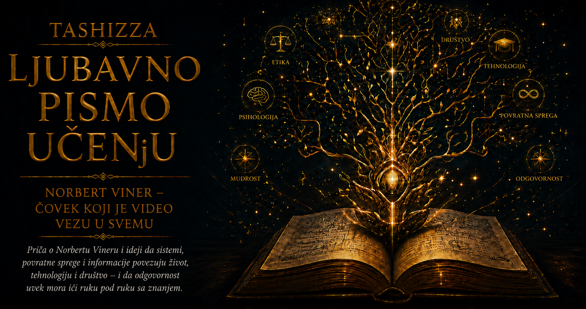

Ljubavno pismo učenju

Čovek je vekovima gradio mašine koje su izvršavale naredbe, prenosile silu i ponavljale unapred određene pokrete. Satovi su merili vreme, parne mašine pokretale fabrike, a mehanički automati zadivljivali posmatrače prividom samostalnog života. Ipak, svaka od tih naprava ostajala je zavisna od ljudskog nadzora čim bi se okolnosti udaljile od onih za koje je bila napravljena. Radnik je morao da osluškuje motor, kormilar da prati pravac broda, a rukovalac da posmatra kazaljke i ispravlja rad sistema. Čovek je bio karika koja je primećivala posledicu, procenjivala odstupanje i odlučivala o sledećem potezu.
Razvoj tehnike postepeno je pokazivao da mašina može dobiti sopstveni mehanizam korekcije. Regulator parne mašine smanjivao je dotok pare kada bi se osovina zavrtela prebrzo, dok je termostat uključivao ili isključivao grejanje prema izmerenoj temperaturi. Takve naprave koristile su podatak o rezultatu svog prethodnog delovanja i na osnovu njega menjale naredni postupak. Dugo su smatrane posebnim inženjerskim rešenjima vezanim za pojedinačne uređaje, sve dok Norbert Viner u njima nije prepoznao obrazac dovoljno širok da poveže mašine, žive organizme, komunikaciju i učenje.
Presudan podsticaj došao je tokom Drugog svetskog rata, kada je Viner radio na problemu navođenja protivavionske artiljerije. Avion se kretao velikom brzinom, menjao pravac i reagovao na opasnost, pa ga nije bilo moguće pogoditi gađanjem mesta na kojem je upravo primećen. Sistem je morao da proceni njegov budući položaj, uzme u obzir kašnjenje između merenja i dejstva, prati rezultat prethodne procene i neprekidno prilagođava narednu. U tom složenom susretu matematike, elektrotehnike, verovatnoće i ljudskog ponašanja pojavilo se pitanje koje će daleko nadživeti ratni zadatak: kako sistem može da koristi posledice sopstvenog delovanja da bi popravljao svoje ponašanje?
Viner je sa inženjerom Džulijanom Bigelouom i fiziologom Arturom Rozenblutom uočio zajedničku strukturu u pojavama koje su do tada pripadale udaljenim naučnim oblastima. Čovek koji pruža ruku prema čaši, životinja koja održava ravnotežu, termostat koji reguliše temperaturu i uređaj koji prati pokretnu metu oslanjaju se na kruženje informacije. Svaki postupak proizvodi posledicu, posledica se opaža, a razlika između stvarnog i željenog stanja utiče na naredni postupak. Rezultat prethodnog delovanja tako postaje deo uzroka budućeg delovanja.
Ovaj kružni odnos dobio je naziv povratna sprega. Njegova važnost nalazi se u sposobnosti sistema da rezultat vrati u proces upravljanja, čime se pravolinijski sled naredbe i izvršenja pretvara u neprekidan razgovor između cilja i stvarnosti. Sistem više ne zavisi isključivo od savršeno zamišljenog početnog plana, jer tokom rada prikuplja podatke o sopstvenom učinku. Svaki novi korak nosi trag prethodnog, pa se ponašanje menja dok proces još traje. U toj sposobnosti opažanja i korekcije Viner je video temelj prilagođavanja.
Negativna povratna sprega smanjuje odstupanje od željenog stanja. Kada temperatura padne, termostat uključuje grejanje; kada se približi podešenoj vrednosti, potreba za dodatnim zagrevanjem prestaje. Vozač koji primeti da automobil skreće udesno pomera upravljač ulevo, dok nervni sistem čoveka pri gubitku ravnoteže aktivira mišiće koji obnavljaju oslonac. Reč „negativna” ovde opisuje suprotstavljanje promeni, bez vrednosnog značenja koje joj pripisujemo u svakodnevnom govoru. Stabilnost nastaje kroz mnoštvo malih odgovora na odstupanja, pa ravnoteža postaje dinamično postignuće umesto nepomičnog stanja.
Pozitivna povratna sprega deluje u suprotnom smeru, jer početnu promenu pojačava i vraća u novi krug delovanja. Mikrofon postavljen preblizu zvučniku prima zvuk koji je zvučnik proizveo, ponovo ga pojačava i stvara sve snažnije zavijanje. Glasina izaziva strah, strah pokreće ponašanje koje joj daje privid potvrde, a ta potvrda zatim širi glasinu. Rast cene privlači nove kupce, njihova kupovina dodatno podiže cenu, pa se krug nastavlja sve dok ga ne zaustavi neko ograničenje. Pojačavajuće petlje mogu podstaći razvoj i stvaralaštvo, ali mogu proizvesti paniku, pregrevanje, polarizaciju i slom.
Razlikovanje stabilizujućih i pojačavajućih petlji promenilo je način razmišljanja o uzrocima. U složenom sistemu posledica se vraća i preobražava uslove iz kojih je nastala, pa se ponašanje celine teško može objasniti jednom početnom silom. Veća prodaja omogućava snažnije oglašavanje, oglašavanje privlači nove kupce, dok rast cene, iscrpljene zalihe ili zasićenje tržišta istovremeno ograničavaju širenje. Ono što opažamo kao mir, rast ili krizu često nastaje iz susreta više krugova koji se međusobno podstiču, usporavaju i menjaju.
U takvim krugovima presudnu ulogu imaju tačnost, brzina i način tumačenja informacije. Povratna poruka može biti pouzdana, a ipak stići prekasno da bi omogućila dobru odluku. Vozač koji kasni sa korekcijom previše pomera upravljač, zatim pokušava da ispravi novu grešku i počinje da vijuga. Organizacija koja dobija podatke o potražnji tek nakon nekoliko meseci naručuje robu prema stanju koje je već prestalo da postoji. Terapija čije dejstvo nastupa postepeno može biti prerano pojačana, pa njen ukupan učinak kasnije postane prevelik. Kibernetičko mišljenje zato prati čitav put informacije: šta je izmereno, kada je poruka stigla, kako je protumačena i koliku je promenu izazvala.
Viner je za nauku o upravljanju i komunikaciji izabrao naziv kibernetika, oslanjajući se na grčku reč kybernētēs, koja označava kormilara. Slika kormilara sažimala je suštinu njegove zamisli. Brod se ne usmerava jednim pokretom koji će zauvek ostati ispravan, pošto vetar, talasi i struje neprestano menjaju okolnosti plovidbe. Kormilar posmatra stvarni pravac, poredi ga sa željenim kursom i prilagođava položaj kormila. Upravljanje tako postaje sposobnost osluškivanja posledica sopstvenih odluka, dok naredba koja ne prima odgovor iz sveta ostaje slepa.
Objavljivanjem knjige Cybernetics: or Control and Communication in the Animal and the Machine 1948. godine ova zamisao dobila je oblik interdisciplinarnog naučnog programa. Viner je pokazao da se određeni problemi regulacije mogu opisivati zajedničkim jezikom u električnim kolima, nervnim sistemima, mišićnim pokretima, komunikacionim mrežama i ranim računarima. Fiziolog koji proučava održavanje telesne temperature, neurolog koji istražuje pokret, inženjer koji konstruiše regulator i matematičar koji izdvaja signal iz šuma bavili su se različitim pojavama, ali su svuda mogli da pitaju kako sistem prima informaciju, obrađuje je, deluje i iz posledica tog delovanja dobija novu informaciju.
Informacija je time dobila ulogu jednako značajnu kao energija i materija. Motor može posedovati dovoljno snage, a ipak izgubiti stabilnost ako ne dobija tačne podatke o brzini. Organizam može imati zdrave mišiće, ali bez čulnih signala ne uspeva pouzdano da usmeri pokret. Fabrika može raspolagati velikim kapacitetom, dok zakašnjeli ili pogrešni podaci o zalihama i potražnji njenu snagu usmeravaju prema proizvodnji koja nikome nije potrebna. Mogućnost delovanja zavisi od onoga što sistem može da sazna o sebi, svom okruženju i posledicama koje proizvodi.
Kibernetika je snažno uticala na razvoj automatike, robotike, računarstva i ranih istraživanja veštačke inteligencije. Autopiloti, regulatori industrijskih postrojenja, robotske ruke i sistemi za stabilizaciju letelica mere svoje stanje, porede ga sa ciljem i izračunavaju potrebnu promenu. Savremeno mašinsko učenje koristi složenije matematičke postupke i pripada drugačijem tehnološkom dobu, ali u njemu i dalje živi kibernetička struktura: model proizvodi rezultat, greška se meri, parametri se menjaju, a novi pokušaj pokazuje da li je korekcija bila korisna. Učenje se odvija kroz ponovljeni krug predviđanja, posledice i prilagođavanja.
Povratna sprega postala je dragocen jezik i u biologiji i medicini. Održavanje telesne temperature, nivoa glukoze, krvnog pritiska i ravnoteže vode zavisi od složenih mreža signala koje podstiču ili usporavaju procese u organizmu. Proteze i medicinska pomagala postaju delotvorniji kada korisniku vraćaju informacije o položaju, dodiru ili sili, dok uređaji zatvorenog kruga mogu pratiti stanje pacijenta i prema izmerenim promenama prilagođavati intervenciju. Živi organizam pokazuje da postojanost zahteva neprekidnu razmenu poruka između njegovih delova.
U obrazovanju povratna informacija otkriva razliku između ocenjivanja završenog rada i podrške stvarnom učenju. Konačna ocena učeniku saopštava kako je njegov učinak svrstan, ali mu često ostavlja malo razumevanja o načinu na koji može napredovati. Delotvorna povratna informacija pokazuje gde je nastala teškoća, koje je razmišljanje bilo dobro usmereno i kakav bi sledeći pokušaj mogao da produbi razumevanje. Učenik tada menja postupak, proverava rezultat i postepeno razvija sposobnost da sam prepoznaje kvalitet sopstvenog rada. Istovremeno, nastavnik iz učenikovog odgovora saznaje kako je njegovo objašnjenje primljeno i prema tome prilagođava nastavu.
Ova logika otkriva i razliku između vođenja i potpunog nadzora. Sistem sposoban za učenje zahteva dovoljno slobode da ispituje mogućnosti, zajedno sa povratnim informacijama koje mu pomažu da razume posledice. Slaba ili zakašnjela sprega ostavlja ga bez orijentacije, dok previše snažna korekcija može izazvati oscilacije, strah i zavisnost od spoljnog suda. Dobar nastavnik, lekar, vođa ili projektant regulatora uzima u obzir vreme, meru, neizvesnost i sposobnost čoveka ili sistema da postepeno izgradi sopstvenu ravnotežu.
Viner je veoma rano razumeo da tehnički uspešna povratna sprega ne može sama da odredi vrednost cilja kojem sistem služi. Mašina može izuzetno precizno ostvarivati pogrešno formulisan zadatak, dok organizacija može povećavati merljivu efikasnost i istovremeno nanositi štetu ljudima. Digitalna platforma koja nagrađuje vreme provedeno uz sadržaj može postati veoma uspešna u privlačenju pažnje, čak i kada tu pažnju zadržava uznemirenošću, sukobom i stalnim izazivanjem snažnih reakcija. Petlja može raditi besprekorno, dok njena svrha ostaje kratkovida ili nehumana.
Zbog toga je u knjizi The Human Use of Human Beings Viner razmatrao društvene posledice automatizacije, promene rada i prenošenja odluka na mašine. Njegova zabrinutost izrastala je iz saznanja da automatizovani sistem neumorno pojačava ciljeve koje su mu ljudi ugradili. Odluka koju proizvede mašina može delovati nepristrasno, iako su njena pravila, podaci i merila oblikovani istorijom, institucijama i odnosima moći. Tehnička preciznost ne oslobađa čoveka odgovornosti za izbor cilja, način merenja i posledice koje ostaju izvan izabranog pokazatelja.
Savremeni digitalni život ispunjen je povratnim petljama čije razmere Viner nije mogao da vidi, ali čiju je strukturu izuzetno dobro razumeo. Pretraživači i platforme beleže reakcije korisnika, prema njima menjaju buduće preporuke, a preporuke zatim oblikuju ono na šta će korisnici reagovati. Navigacioni sistem predlaže put prema stanju saobraćaja, dok veliki broj vozača koji prihvati isti predlog menja upravo ono stanje koje je sistem pokušao da predvidi. Algoritamske odluke utiču na podatke iz kojih će nastajati buduće odluke, pa početna procena može vremenom sama proizvesti sopstvenu potvrdu.
Zatvoren krug postaje posebno opasan kada sistem procenjuje ljude. Ako se jednoj grupi ređe pruža prilika, u podacima će biti zabeleženo manje njenih uspeha, a algoritam tu posledicu može protumačiti kao opravdanje za dalje uskraćivanje prilike. Ako platforma prikazuje korisniku sadržaj sličan onome na koji je nekada reagovao, njegove naredne reakcije mogu sužavati izbor sve dok prolazno interesovanje ne počne da izgleda kao trajna osobina. Povratna sprega tada više ne opaža samo stvarnost, jer učestvuje u njenom stvaranju.
Kibernetičko nasleđe zbog toga zahteva da uz svaku tehnologiju postavimo pitanja o krugu odgovornosti. Potrebno je znati šta sistem meri, koje odstupanje proglašava greškom, koliko brzo reaguje, čije ciljeve sledi i koje posledice ostaju izvan njegovog vidnog polja. Jednako je važno utvrditi ko ima pravo da promeni cilj, ospori rezultat ili zaustavi petlju koja proizvodi štetu. U svetu automatizovanih odluka ova pitanja pripadaju samom središtu projektovanja, jer brzina procesora i tačnost modela imaju smisla tek unutar svrhe kojoj služe.
Vinerova ideja nadživela je naziv discipline i ugradila se u teoriju upravljanja, informatiku, robotiku, biologiju, kognitivne nauke, ekonomiju i istraživanje složenih sistema. Povratne petlje, adaptacija, samoregulacija, izdvajanje signala iz šuma i učenje iz rezultata postali su deo jezika mnogih oblasti koje se više ne predstavljaju kao kibernetika. Ipak, njihov zajednički koren ostaje prepoznatljiv u saznanju da se ponašanje sistema ne može razumeti samo iz početne naredbe, pošto posledice ulaze u novi krug i menjaju budući tok.
I svakodnevno učenje odvija se u takvim krugovima. Muzičar sluša ton koji je proizveo i prilagođava pokret, pisac čita sopstvenu rečenicu i menja njen ritam, a razgovor dobija smer kroz pauze, izraze lica i odgovore sagovornika. Čovek napreduje kada sme da pokuša, prepozna odstupanje i ponovo deluje sa dubljim razumevanjem. Greška tada postaje podatak o odnosu između namere i rezultata, dok povratna informacija dobija vrednost prema tome koliko povećava sposobnost čoveka da samostalno procenjuje i menja sopstveni rad.
Najtrajnija snaga kibernetičkog mišljenja nalazi se u skromnosti pred odgovorom stvarnosti. Naredba, plan ili reforma predstavljaju početak procesa čije posledice nikada ne možemo potpuno predvideti. Svaka intervencija menja okolnosti u kojima će sledeća intervencija delovati, pa odgovorno upravljanje zahteva pažljivo posmatranje, spremnost na korekciju i hrabrost da priznamo pogrešnu pretpostavku. Vinerov kormilar ne očekuje mirno more niti nepogrešivu kartu; on čuva pravac tako što ostaje budan pred vetrom, strujom i talasima.
Ideja povratne sprege postala je veća od svog autora zato što opisuje jednu od osnovnih struktura prilagođavanja. Prepoznajemo je u ćeliji i računaru, u letu aviona i učenju deteta, u radu fabrike i razvoju algoritma, u razgovoru dvoje ljudi i kretanju tržišta. Sve te pojave zadržavaju svoje duboke razlike, dok nam zajednički obrazac pomaže da pratimo kako se posledice vraćaju u proces delovanja. Viner nas je naučio da stabilnost može biti dinamična, da upravljanje zavisi od komunikacije i da sistem sposoban za razvoj mora čuti odjek sopstvenog ponašanja.
U takvoj slici sveta čovek postaje učesnik koji deluje, osluškuje, uči i ponovo bira smer. Između namere i posledice otvara se prostor u kojem proveravamo svoje znanje, popravljamo odluke i preuzimamo odgovornost za ono što smo pokrenuli. Kibernetika je zato ostala kao upozorenje da bez povratne informacije nema pouzdanog upravljanja, dok bez promišljanja ciljeva nema dostojne upotrebe kontrole. Sposobnost da menjamo budućnost počinje sposobnošću da čujemo odgovor sveta koji svojim delovanjem menjamo.